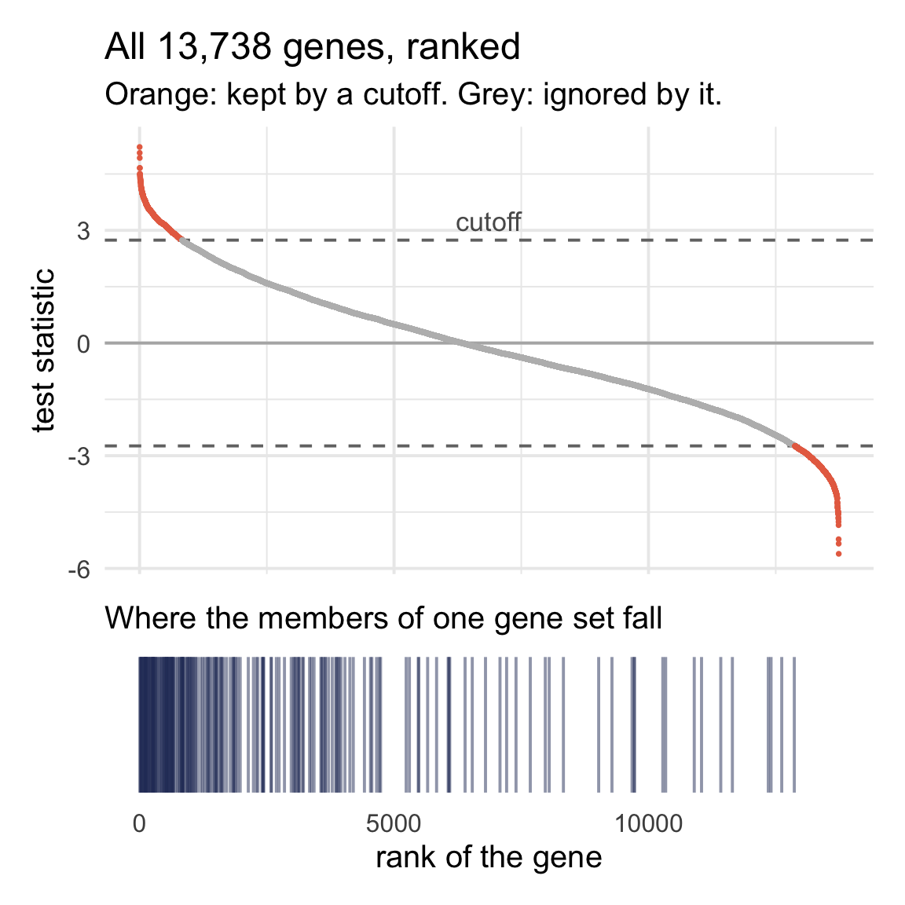
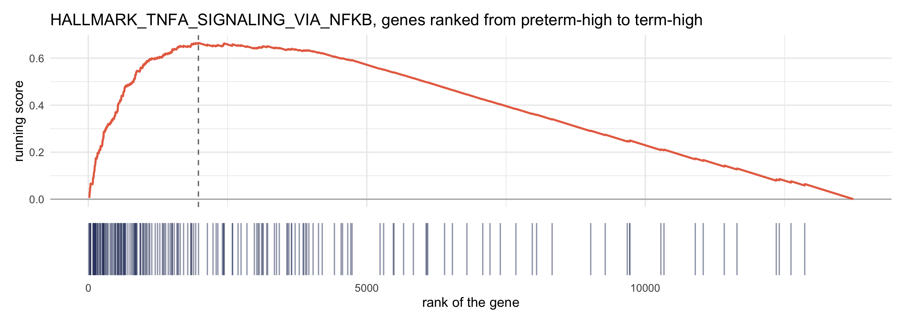
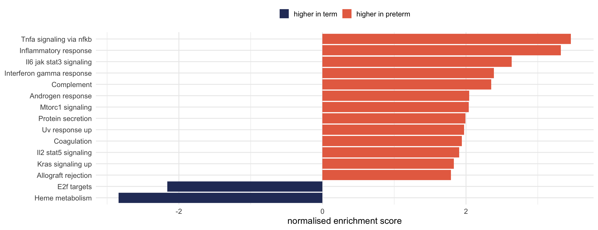
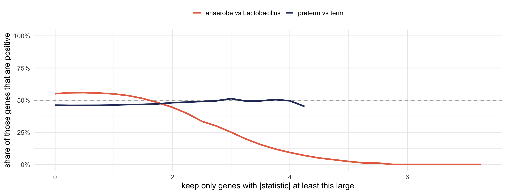
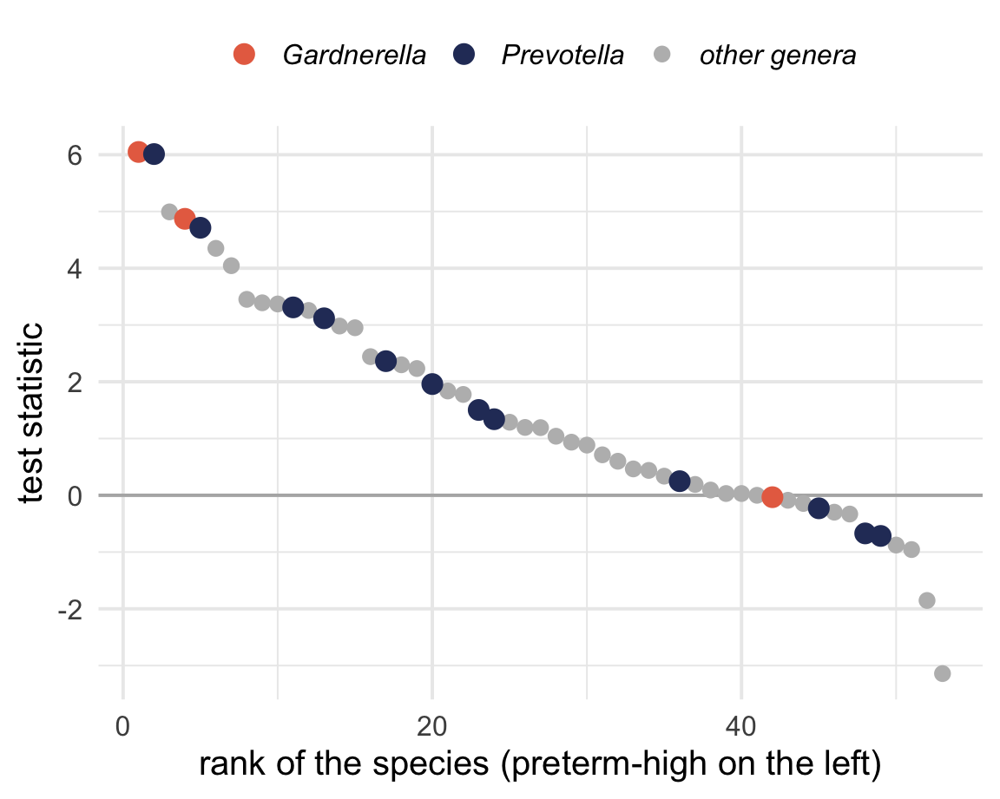
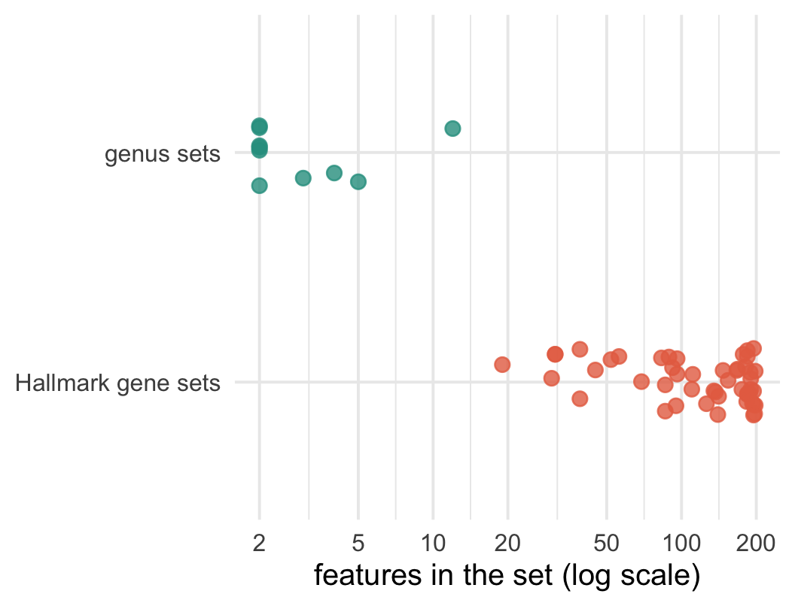

Workshop 2, Module 5
1,698 genes with an adjusted p-value below 0.05.
What is the finding?
You need to say what the genes have in common.
We use GSEA, because with the first approach the answer depends on a threshold you picked arbitrarily.

Someone curated it, from papers or experiments.
We use the Hallmark collection: 50 sets of about 200 genes, one for each broad biological program.
HALLMARK_INFLAMMATORY_RESPONSE
HALLMARK_TNFA_SIGNALING_VIA_NFKB
HALLMARK_INTERFERON_GAMMA_RESPONSE
The first 40 of the 195 HALLMARK_TNFA_SIGNALING_VIA_NFKB genes in our table:
PDE4B NFIL3 PTX3 CEBPB IL6 BTG2 FOS LITAF TRIB1 DUSP1 ATP2B1 NFAT5 BCL2A1 NAMPT EGR1 KDM6B PLAUR PTGS2 IL1B PLEK SLC16A6 SLC2A3 CCNL1 ETS2 CD44 SOCS3 SGK1 TLR2 PTPRE G0S2 TNFAIP3 SERPINE1 NFE2L2 BCL3 SNN DENND5A AREG IFNGR2 PFKFB3 NFKBIA
| gene | log2 FC | std. error | p-value | statistic |
|---|---|---|---|---|
| A | +3.0 | 0.5 | 2e-9 | +6.0 |
| B | -3.0 | 0.5 | 2e-9 | -6.0 |
| C | +6.0 | 4.0 | 0.13 | +1.5 |

Each tick is a set member. The score climbs at each hit and drifts down between them.
The highest point the score reaches is the enrichment score. Shuffle the gene labels many times to find out how surprising that peak is.
NES is the peak, normalised so sets of different sizes are comparable. Its sign tells you which end of the ranking the set sits at.

| set | size | NES | padj |
|---|---|---|---|
| Tnfa signaling via nfkb | 195 | 3.46 | 2.1e-39 |
| Inflammatory response | 184 | 3.32 | 1.2e-33 |
| Heme metabolism | 188 | -2.84 | 1.6e-20 |
| Interferon gamma response | 193 | 2.39 | 1.9e-12 |
| Complement | 185 | 2.35 | 6.4e-12 |
| Il6 jak stat3 signaling | 83 | 2.64 | 1.0e-10 |
Inflammatory signalling, tumour necrosis factor, interferon and complement are all shifted up in the people who delivered early.
You could put that sentence in an abstract, and it comes from the same 13,738 statistics that gave you the list of 1,698 genes.
Run the same analysis on Tuesday’s other contrast, anaerobe versus Lactobacillus.
| set | size | NES | padj |
|---|---|---|---|
| Estrogen response early | 189 | -2.06 | 2.3e-08 |
| Tnfa signaling via nfkb | 195 | -1.87 | 4.7e-06 |
| Estrogen response late | 184 | -1.76 | 1.0e-04 |
| P53 pathway | 190 | -1.70 | 2.0e-04 |
| Hypoxia | 177 | -1.74 | 3.0e-04 |
| Il2 stat5 signaling | 190 | -1.64 | 6.5e-04 |
18 of 50 sets are significant, and 17 of those point the same way. Does that look like biology to you?
Is the distribution of test statistics centred?
| ranking | share of all genes positive |
|---|---|
| preterm vs term | 46.1% |
| anaerobe vs Lactobacillus | 55.0% |
Both are near half, so by this check both rankings look fine.
The check is wrong, because GSEA does not weight genes equally. It weights each gene by the size of its statistic.

| ranking | all genes | significant genes | 500 strongest |
|---|---|---|---|
| preterm vs term | 46.1% | 49.4% | 49.6% |
| anaerobe vs Lactobacillus | 55.0% | 30.5% | 4.4% |
Every large gene set will be dragged toward the Lactobacillus end.
| ranking | significant sets | pointing one way |
|---|---|---|
| preterm vs term | 26 | 23 |
| anaerobe vs Lactobacillus | 18 | 17 |
The individual genes from the community contrast are still real. Mucins and filaggrin were up in Lactobacillus-dominant samples by a factor of eight, with adjusted p-values near ten to the minus eighteen.
The imbalance undermines the set-level claim, that a named program is coordinately shifted. Large generic sets drift along with a lopsided list, so the gene-level and set-level claims need separate checks.
Before you believe an enrichment, sort your genes by the size of their effect and look at the top few hundred.
If those nearly all point one way, every large set will come out enriched that way, and the method will give you a very small p-value for it.
Our community ranking was centred overall and still failed this check.
A gene set is a label that groups features.
Species already carry labels that group them: genus and family.
| genus | size | NES | padj |
|---|---|---|---|
| Gardnerella | 3 | 1.50 | 0.03 |
| Corynebacterium | 4 | -1.48 | 0.25 |
| Actinomyces | 2 | -1.41 | 0.27 |
| Dialister | 2 | 1.29 | 0.27 |
| Porphyromonas | 2 | 1.19 | 0.45 |

Gardnerella comes out: two of its three species rank 1st and 4th toward preterm, which is enough for a three-member set.
| genes | species | |
|---|---|---|
| features ranked | 13,738 | 53 |
| sets tested | 50 | 10 |
| typical set size | about 190 | 2 to 12 |
| sets significant | 26 | 1 |

Set-level analysis pays off when you have thousands of features and hundreds of curated groups. With 53 species in ten genera, you are better off reading the species list.
The code was identical on genes and on species, but it only told us something new about the genes.
Pick the method for how many features your table has and how they group, rather than for whether it came from RNA-seq or 16S.
Open notebooks/05-enrichment.qmd.